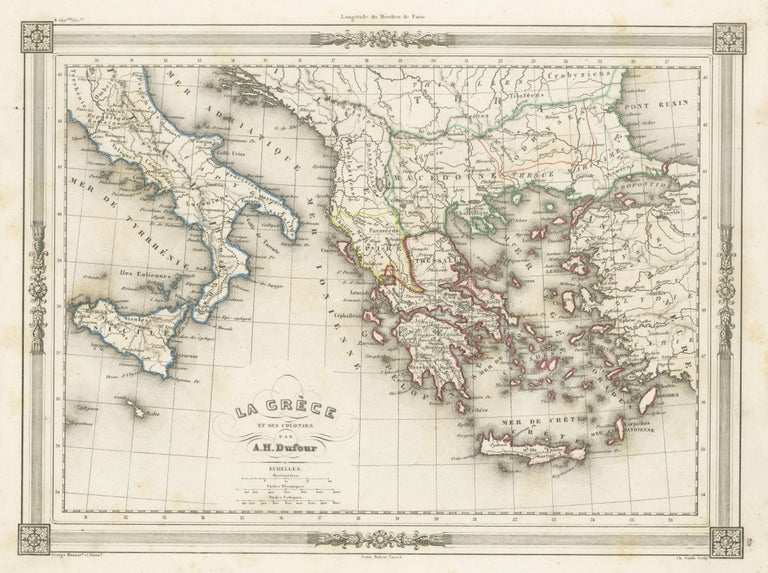
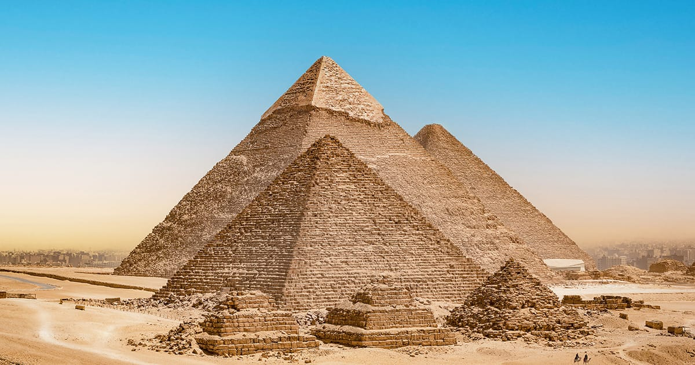

STORIA
Mappa
Roma 3D

Grecia
| Anno | Ore | Programma |
|---|---|---|
| I | 3 |
Storia
|
| II | 3 |
Storia
|
| III | 2 |
Storia
|
| IV | 2 |
Storia
|
| V | 2 |
Storia
|
VERSO NOI

Piramide
Rita Levi-Montalcini, donne che hanno cambiato la storia

Napoleone